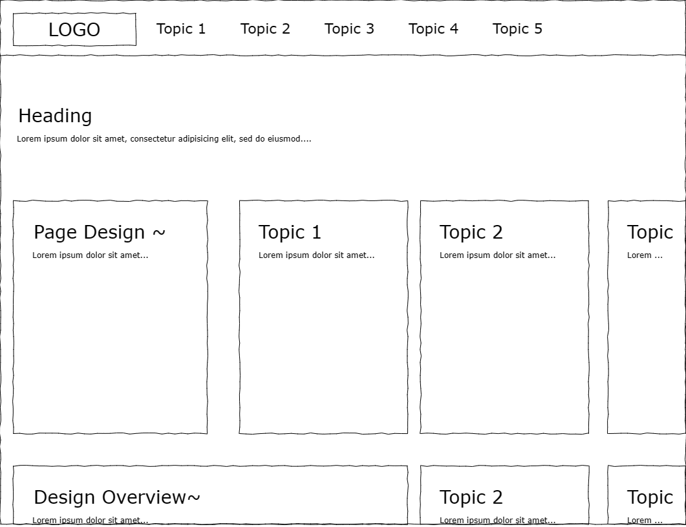

The design pages layout will be similar to a that of the blog (with more pictures), serving as a record of the different iterations that the website has gone through. Users will be able to scroll through the page like a time-line and track the process of the website as time moves on.
Interation 2: Bento UI

By organising all the different page designs onto their own page reduces the clutter of this page. It also allows me to write and update the iterations of
each page on their own page, which makes it a lot less chaotic.
There will be a Design Overview section that just highlights some of the main concepts that are governing each iteration of the website.